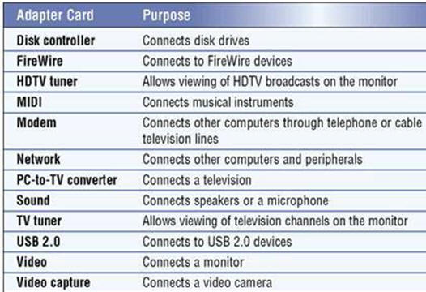

SubTopic 4: Processing Devies
Qn73. Define a System Unit
The system unit is a box-like case that houses the motherboard, the disks and drive bays, the power supply and cooling systems
Qn74. List any five hardware components found inside the system unit
• motherboard
• the processor chip,
• memory chips,
• support electronic circuitry,
• buses, and Expansion Slots for Adapter Cards.
• Drive bays
Qn75. Define a motherboard
The motherboard is a single circuit board, that provides the path through which the processor communicates with internal and peripheral devices.
Qn76. Mention any five components found on or attached to the motherboard
Refer to Qn 74
Qn77. Define an adapter card
An adapter card (also known as an expansion card) is simply a circuit board you install into a computer to increase the capabilities of that computer
Qn78. List any five adapter cards and their functions

Qn79. Define a bus
The bus is a common electrical path, that enables data flow between the various system components
Qn80. Differentiate between a data bus and an address bus
| Address Bus | Data Bus |
|---|---|
| A computer bus that is used to specify a phyisical address in memory | A computer bus that is used to transmit data among components |
| Unidirectional | Bidirectional |
| Helps to transfer memory addreses of data and IO | Helps to send and receive data |
| Width determines the amount of memory a system can address | Width determines the data transferring rate |
Qn81. Define a power supply
The power supply is the component of the system unit that converts the wall outlet AC power of 110 to 240 volts into DC power of 0.5 to 12 volts
Qn82. Define a heat sink
A heat sink is a small ceramic or metal component with fins on its surface that absorbs and disperses heat produced by electrical components such as a processor.
Qn83. Define a CPU
The central processing unit (CPU), is a chip that interprets, carries out the basic instructions and manages most of a computer's operations.